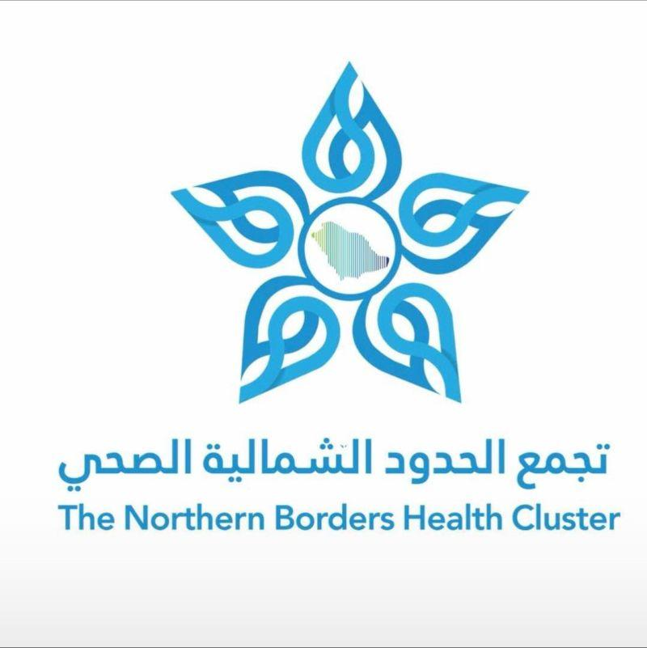

Doctor to Doctor
دليل التواصل الطبي الموحد بين مستشفيات التجمع
كل المستشفيات
كل التخصصات
الكل
🟢 المناوب الآن
متاح
مسح الفلاتر
دليل الأطباء
لا توجد نتائج مطابقة.
⚠️ نسخة تجريبية: جميع أسماء الأطباء وأرقام التواصل في هذه النسخة وهمية لأغراض تجربة الواجهة فقط. قبل التوزيع الرسمي تُستبدل بالبيانات المعتمدة وآلية تحديث واضحة.
إغلاق